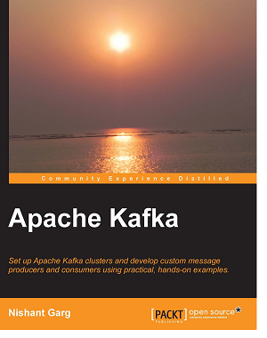
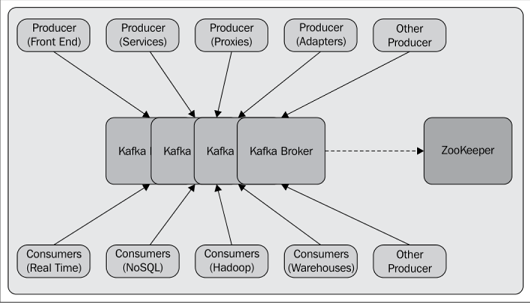

为了从大数据中获得真实价值，任何形式的信息丢失都是负担不起的。 Apache Kafka被设计成常量时间性能，时间复杂度为O(1)的磁盘结构，甚至是达到TB级别的大容量消息存储。
考虑到大数据，Kafka被设计成工作在每秒支持数百万条消息的商用硬件上。
Apache Kafka明确地支持在Kafka服务器上对消息进行分区 ，在维护每个分区排序语义的同时，为一个消费者集群上分配消费。
Apache Kafka系统支持简单的集成来自不同平台的客户端，如Java、。NET、PHP、Ruby和Python。
生产者线程生成的消息可以立即对消费者线程可见;这个特性对于基于事件的系统非常重要 作为复杂事件处理(CEP)系统。

在生产方面，有不同类型的生产者，如以下:Apache Kafka的目标是在Hadoop系统中提供一种并行负载机制，以及在一组机器上划分实时消耗的能力，从而统一脱机和在线处理。 kafka可以与 Scribe 或者 Flume 进行比较，因为它对处理活动流数据很有用;但是从建筑的角度来看， 它更接近于传统的消息传递系统，如ActiveMQ或RabitMQ。